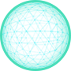

集团业务板块及项目分类统计
项目总数
农业产业
产业导入
融资咨询
物流商贸
能源开发
50
5
8
12
15
10
集团市场布局示意图
加载状态:
加载中...
地市数量:
--
数据源:
--
本年度项目分类统计
策划项目
5
在建项目
4

竣工项目
6
集团重点项目跟踪管理窗口
项目名称
项目概况
前期策划
可研立项
规划设计
建设实施
竣工验收
商河县"十四五"县域土地整治项目一期
建设规模 XXX
新增耕地 XXX
投资规模 XXX
项目负责人：李四 李四
沙河社区安置增减挂钩复垦项目
建设规模 XXX
新增耕地 XXX
投资规模 XXX
项目负责人：李四 李四 李四 李四 李四
20XX年度国土变更调查
建设规模 XXX
新增耕地 XXX
投资规模 XXX
项目负责人：李四 李四 李四 李四 李四